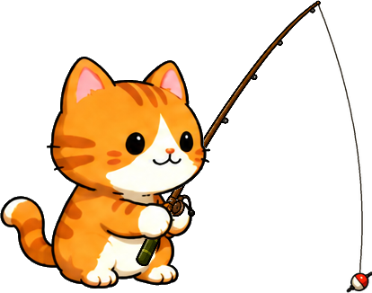

水声
未播放轻水波贴着岸边起伏，细小流水缓缓回落。
正在读取音轨…
把音乐与按钮声放下，听一会儿水边的声音。
正在准备水边的声音…
九段场景演示。自然水波铺底，动作声与猫叫随事件响起，按钮保持安静。

猫咪与水花为试听示意三层自然录音可分别播放、淡出和调音量，也可一起叠加。没有旋律，也没有按钮提示音。
轻水波贴着岸边起伏，细小流水缓缓回落。
柔风掠过池塘，留出安静的呼吸。
叶片轻轻相擦，点缀岸边的自然纹理。
各层独立控制，也可一起播放。
每层用 2 秒淡入淡出。单层音量为 0 只静音该层；总音量为 0 立即静音全部。隐藏时淡出，恢复后继续已选音轨。
咬钩／扰水／拍水 × 四个体型，每组两条不同录音剪辑。先听 A–L，再揭示标签；选样不改变音高。动作声可与环境声一起试听。
选择动作与鱼体型，听水花融入水边环境。
环境声来自河岸、水边风声与树叶实录，使用与游戏相同的音频和音量配置。环境声清单 · 动作音与猫叫清单 · 来源与许可
| 资源 | 版本 / 来源 | SHA-256 |
|---|
本页为浏览器场景演示；游戏端与 Windows 实机验证另行记录。